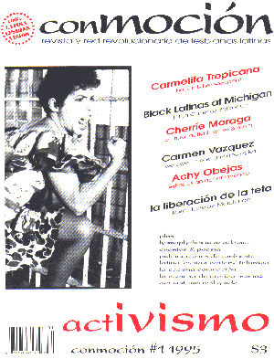

CONMOCION

In this issue:
Cherrie Moraga
Lourdes Perez
Latina Lesbian History Re-visited (book reviews)
Hilda Gutierrez Baldoquin
Black Latinas Unite at Michigan
Achy Objeas
Erotiza Memaz (advise column)
Ben-Hur Leon Zuleta Ruiz
Margarita Benitez
Un retiro para escritoras (Hedgebrook)
Telarana
Leslie Salas
Rosamaria Roffiel
Josi Mata
Maria Luisa Masque
Mic
IV Encuentro Feminista Latinoamericano y del caribe
Haydee Morales
Amy Concepcion
Luz Maria Umpierre
Carmen Vasquez
Rosita Angulo
On The Conmocion Masthead:
"revista y red revolucionaria de lesbianas latinas"
Conmocion was published in Miami, Florida.